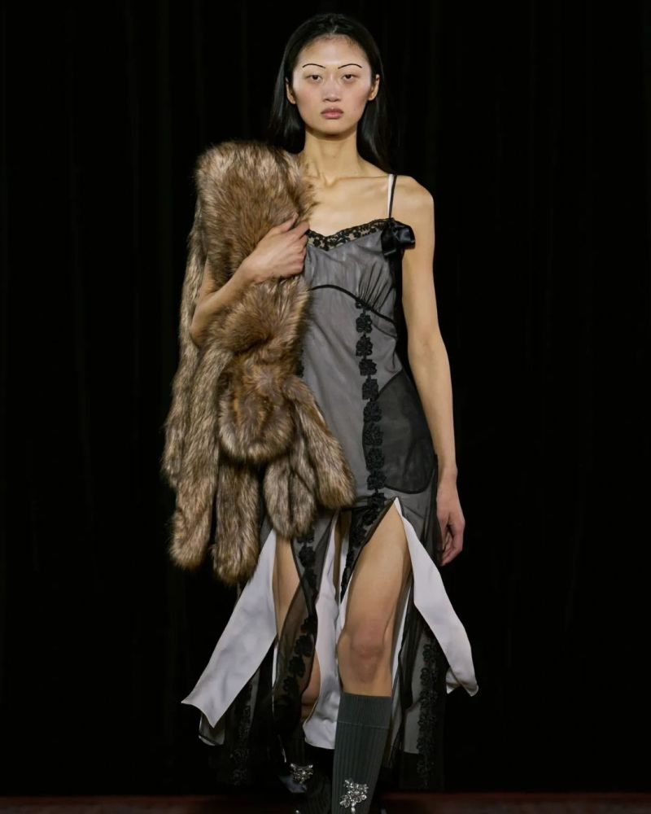
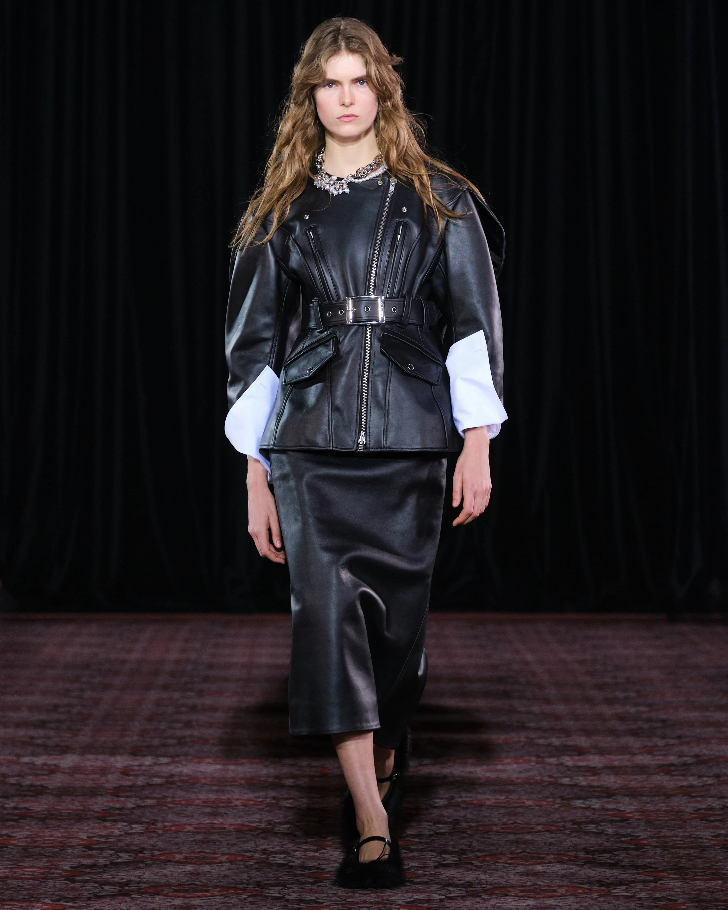
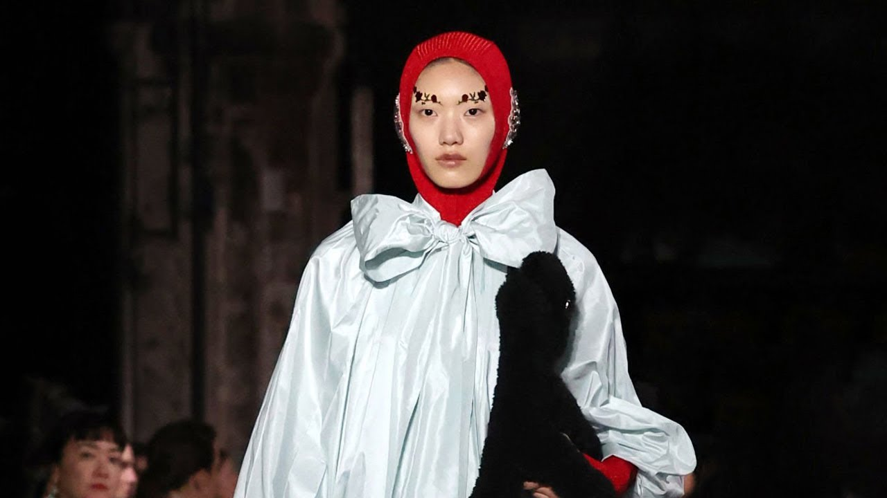
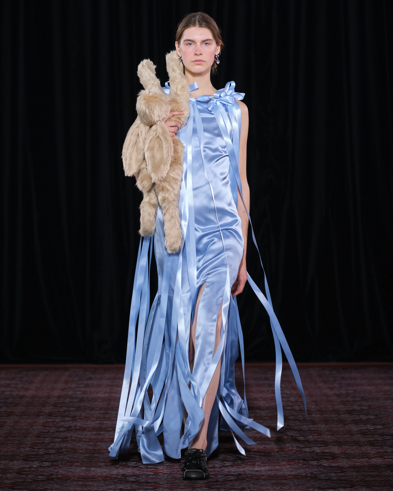

Autumn / Winter 2025
Goldsmiths' Hall, London • February 2025
Goldsmiths' Hall, London • February 2025
Inspired by Aesop's fable and the vivid memory of school uniforms, AW25 is a meditation on childhood rivalry and the quiet power of taking your time. Described by AnOther Magazine as "a sensual ode to her emo school years."
Shown at the spectacular Grade I-listed Goldsmiths' Hall — its chandeliers, marble columns and stone busts the perfect institutional backdrop for this schoolyard-inspired collection.
Twisted twin sets, Peter Pan collars and dark academia silhouettes in navy, forest green, ivory lace and deep burgundy — punctuated by Simone's signature pearl embellishments in unexpected places.

Celebrity Attendees
Alexa Chung • Fiona Shaw • Andrea Riseborough • Bel Powley
Key Looks

Look 01
Ivory cashmere twin set with asymmetric pearl trim and structured neoprene underlayer — the juxtaposition of soft and rigid.

Look 07
Oversized A-line wool coat in forest green with velvet Peter Pan collar, pearl buttons and raw-edged hem.

Look 14
Delicate ivory lace over structured black neoprene shorts, pearl-embellished knee-high socks. Feminine and defiant.
The Inspiration
Aesop's tortoise — who wins not through speed but through persistence — becomes a metaphor for Simone's own trajectory. Deliberate, distinctive, unstoppable.
View All Collections